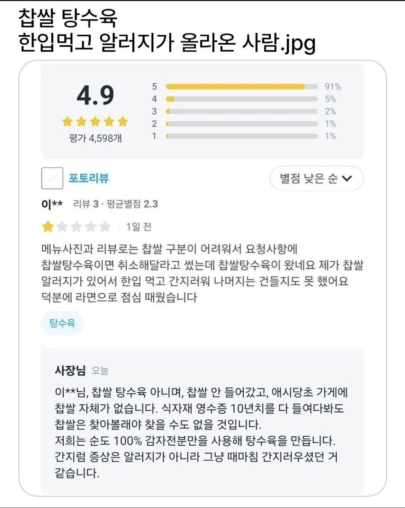

그냥 가려운 사람 ㅋㅋㅋ

그냥 가려운 사람 ㅋㅋㅋ
너의 쇳소리가~~ 들려허어
평균 별점 2.3 은 좀
알러지 15종 돌려쓰는 중
근데 왜 네이밍이 찹쌀로 됐는진 모르겠는데
전분 종류랑 비율에 따라 옛날 탕수육이랑 찹쌀탕수육 구분됨
찹쌀탕수육도 걍 감자전분으로 만드는거..
찹쌀처럼 쫀득해서 붙은거 아닐까?
마약 어쩌구도 그만큼 중독성 있다 해서 붙은거니까
쫀득하다고 찹쌀이라고 부른거임
예전엔 동네 중국집 탕수육을 만들때 밀가루를 대부분 섞었거든 전분이 비싸니까
그러다가 전분만 쓰던곳 중 하나에서 방송나왔다가 손님들이 쫀득하다고 호들갑 떨다가 찹쌀 탕수육이라는 말을 한게 유행으로 번짐
그럼 감자 알러지인가봐
찹쌀알러지가 아니고 다른 알러지인 거 아니냐
나도 이 생각
아...나는 찹쌀탕수육 튀김옷, 찹쌀가루 인 줄 알았네
찹쌀가루튀기면 엄청 바삭해지는데 한번도 안해묵엇나보구먼
평균 별점 2.3이면 ㅋㅋㅋㅋ
사람이 아닌데 그냥
좀 비누좀 문대고 씻어라 드러운 새끼
몸도 마음도 더러운새끼네
평균 2.3점이면 그냥 갑질이 좋은 버러지새끼네
민원 좆빠지게 처넣는게 취미일듯
간지러우면 좀 씼어라
글만봐도 냄새날것 같은 놈
찹쌀싫어하는 양반이 핑계삼아 적은듯 나도 옛날탕수육 나오는곳이서만 시킴
평점 보면 그냥 테러하는거 좋아하는 새끼 같음
너구나!!!
그냥 기분탓으로 긁고 균들어가서 가려운거 아님?
감자전분 알레르기가 있는데 본인은 그걸 찹쌀탕수육 먹고 알레르기가 올라오니 찹쌀알레르기로 착각하고 산거 아님? ㅋㅋㅋ
상상알러지?
애초에 탕수육이지 찹쌀탕수육이 아니네 ㅅㅂ